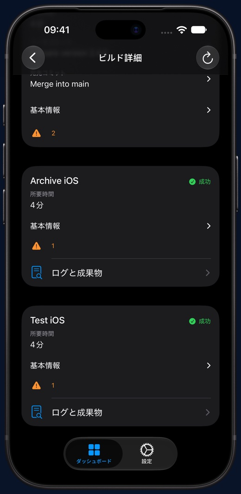

バージョンとビルド
処理やテストの状態を確認し、ビルドを選択して審査情報を管理。必要な進捗をひと目で。
よく使う作業を中心に情報を整理。最新ビルドからテスターまで、リリースの進行に沿って管理できます。
処理やテストの状態を確認し、ビルドを選択して審査情報を管理。必要な進捗をひと目で。
テストグループや招待を管理。スクリーンショットやクラッシュのフィードバックを確認し、次のベータへ。
ページ内で言語を切り替え、App やバージョン、API が対応するアプリ内課金・サブスクリプション情報を編集。

XCODE CLOUD
ワークフローから実行履歴と各ステップを確認。ビルドログを読み、ダウンロード可能な成果物をプレビュー・共有できます。
利用できる操作は Apple API、キーの権限、リソースの状態によって異なります。
App Store Connect API キーで接続。Atlas はデバイス上でリクエストに署名し、Apple に直接接続します。アカウントデータはローカルの暗号化データベースに保存されます。
無料版では開発者アカウントを 1 つ管理できます。Atlas Premium は複数アカウントに対応し、月額・年額プランを用意。価格と更新条件は購入前に表示されます。
App Store Connect API キーと、管理対象 App へのアクセス権が必要です。Atlas にキーを読み込んで接続します。利用できる操作はキーの役割と App へのアクセス権によって異なります。
Apple API、リソースの状態、キーの権限により操作が制限される場合があります。現在の状態とアクセス権を確認してください。不明な場合はエラーと再現手順をご連絡ください。秘密キーは送信しないでください。
購入時の Apple Account で、Atlas Premium 画面の「購入を復元」を使用します。管理・解約は iOS の設定 → Apple Account → サブスクリプションから行えます。
Atlas のバージョンとビルド番号、機種、OS、再現手順、表示されたエラーを記載してください。添付ファイルから API キー、トークン、個人情報、非公開の App データを削除してください。